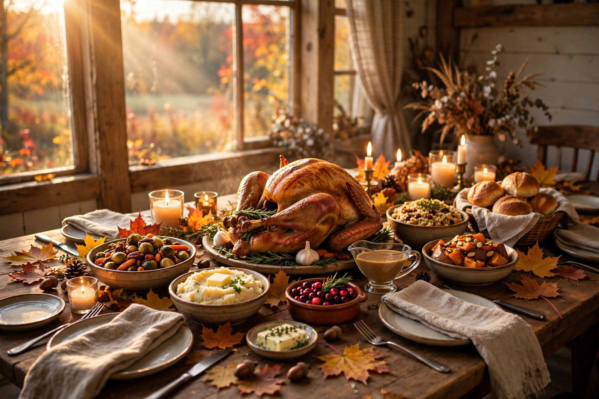
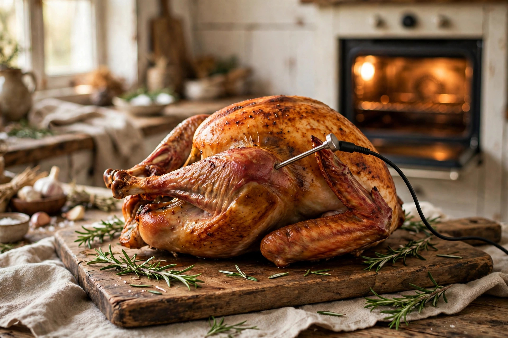

Planning
The long-weekend hosting timeline: what to do each day, Oct 10–12
A day-by-day plan from Saturday prep through Monday leftovers — so the weekend flows and you actually sit down with your guests.
Warm, practical guides for hosting the long weekend

A calm, practical playbook for hosting Canadian Thanksgiving: when to do what, how to handle the turkey, sides that make themselves, potlucks that work, and what to do with everything that's left. No drama, no heroics — just a good weekend.
Start with the long-weekend timeline →
A day-by-day plan from Saturday prep through Monday leftovers — so the weekend flows and you actually sit down with your guests.

How big a turkey to buy, how to thaw it safely, and the simple roasting method that ends the dry-turkey era.

The dishes that taste better (or just as good) made a day or two early — so the big day is about the turkey and the people.

How to coordinate dishes without four green bean casseroles, and how to keep everyone's food arriving hot and on time.

How long everything keeps, how to store it safely, and five second-day meals that make leftovers the best part.